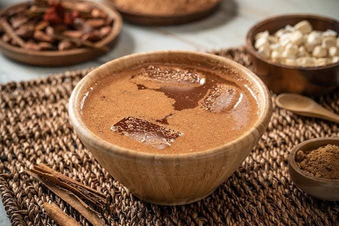

- 250 gramos de tortillas de maíz
- 125 gramos de cacao tostado
- Una raja de canela
- Una cucharadita de achiote en grano o pasta
- Azúcar morena al gusto o piloncillo rallado
- Dos litros de agua
- Hielos
Tascalate
- Tostar los granos de maíz o tortillas en un comal y reservar.
- Tostar también los granos de cacao y la raja de canela.
- Pulverizar en un metate, de modo que quede una pasta con todos los ingredientes integrados.
- Incorporar al agua y mezclar con un molinillo hasta hacer espuma.
- Servir en una jícara o vaso largo.